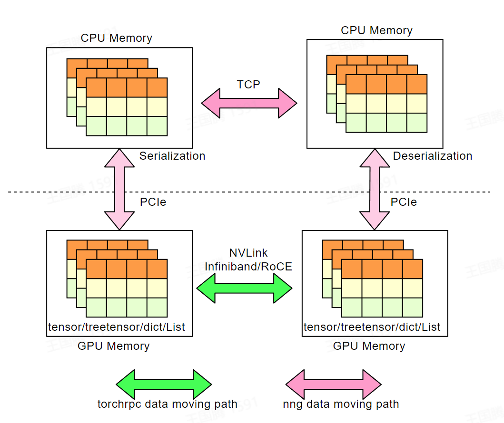

高性能RPC框架¶
简介¶
DI-engine 集成了 torch.distributed.rpc 模块， torchrpc 专注于高性能 P2P 的 RPC 通信，其可以自动选择最佳的通信策略（ NVLINK ，共享内存， RDMA 或是 TCP ），并且支持 GPU direct RDMA 技术。 如果您的集群配备有 InfiniBand/RoCE 网络，则非常建议您使用 torchrpc 作为 DI-engine 的消息队列通信实现；即使没有， torchrpc 实现的多线程 TCP-RPC 通信性能也要优于过去 DI-engine 基于 NNG 的消息队列实现。
{kind=link}
为什么不是NCCL¶
NCCL 作为广泛使用的高性能集合通信库，其专注于诸如 AllReduce 等集合通信范式，但却不擅长进行任意消息类型的高性能P2P通信，而 torchrpc 填补了这一空白。 下表给出了其和 NCCL 的一些对比：
对比 |
NCCL |
torchrpc |
|---|---|---|
支持GPU数据的RDMA-P2P |
True |
True |
支持CPU数据的RDMA-P2P |
False |
True |
支持传输的对象类型 |
只支持tensor |
任意python对象 |
适用场景 |
集合通讯 |
点对点通信 |
性能测试¶
测试环境：配备有 A100-80GB GPU 和 200G 的 Infiniband 网卡的K8S集群
跨节点 P2P 测试¶
test case(unit:ms) |
20 .00 KB |
1 .25 MB |
10 .00 MB |
40 .00 M |
64 0.00 M |
1. 25GB |
2.50 GB |
|---|---|---|---|---|---|---|---|
nng-TCP |
5.7 353 |
9.6 782 |
3 0.5 187 |
17 2.9 719 |
3 450. 7418 |
7 083. 6372 |
14072 .1213 |
nccl-TCP |
0.0 826 |
1. 321 |
3 1.7 813 |
12 8.0 672 |
125 9.72 |
2 477. 2957 |
5157 .7578 |
nccl-IB |
0.0 928 |
0.5 618 |
2.1 134 |
7.1 768 |
120 .131 |
260. 2628 |
518 .8091 |
nccl-GDR (PXN<->PXN) |
0.5 541 |
45. 601 |
9.3 636 |
1 9.3 071 |
10 8.11 |
280. 0556 |
527 .9732 |
torchrpc-TCP |
5.6 691 |
5.4 707 |
1 4.0 155 |
3 9.4 443 |
580 .333 |
1 154. 0793 |
2297 .3776 |
torchrpc-IB |
2 1.3 884 |
4.4 093 |
5.9 105 |
2 2.3 012 |
130 .249 |
236. 8084 |
477 .2389 |
torchrpc-GDR (PXN<->PXN) |
2 0.5 018 |
2 3.2 081 |
1 5.6 427 |
7. 535 7* |
48. 7812 |
77. 2657 |
143 .4112 |
节点内 P2P 测试¶
test case(unit:ms) |
1.25 KB |
20.00 KB |
1.25 MB |
10.00 MB |
4 0.00 M |
6 40.00 M |
1 .25GB |
|---|---|---|---|---|---|---|---|
shm |
0. 3605 |
0.352 |
0. 9924 |
7 .1229 |
47. 9575 |
798 .8635 |
154 8.782 |
nccl-nvlink |
0. 1969 |
0 .1104 |
0. 2162 |
0 .3285 |
0. 4532 |
3 .3166 |
5 .3828 |
cud a-shared-tensor |
0. 5307 |
0.578 |
0. 9643 |
0 .5908 |
1. 2449 |
5 .3707 |
9.686 |
Atari 训练任务测试¶
测试代码： dizoo/atari/example/atari_dqn_dist_rdma.py
memory: “32Gi”
cpu: 16
gpu: A100
test case(unit:s) |
100 epoch avg time |
|---|---|
TCP-nng |
127.64 |
torchrpc-CP |
29.3906 |
torchrpc-IB |
28.7763 |
使用¶
cli-ditask 引入了新的命令行参数：
–mq_type ：引入了 cuda 和 torchrpc:cpu 选项：
cuda ：使用 torchrpc ，需要设置 device_map ，如果集群配置了 GPU direct RDMA 则可以自动使用。
torchrpc:cpu ：使用 torchrpc ，但不设置 device_map 。 GPU数据会被拷贝到内存进行通信。
–init-method ：init_rpc的初始化入口（如果选择 torchrpc 作为后端则为必填项），同 torch.distributed.init_process_group 中的 init-method 参数。
–local-cuda-devices ：设置当前进程可用GPU设备（可选，只有在 mq_type 为 cuda 有效，默认为所有可见设备），用逗号分隔的 int 列表。
–cuda-device-map ：用于设置 torchrpc 的 device_map，（可选，只有在 mq_type 为 cuda 有效，默认会映射全部可用 GPU ，使得各 GPU 之间可以 P2P ），格式如下：
Format: <Peer Node ID>_<Local GPU Local Rank>_<Peer GPU Local Rank>,[...] example: --cuda-device-map=1_0_1,2_0_2,0_0_0
一个具体的例子：
export INIT_METHOD="tcp://XX.XX.XX.XX:12345"
# learner 位于节点 0 ，使用 GPU0 ，并建立和节点1的GPU0间的P2P映射
ditask --package . \
--main atari_dqn_dist_rdma.main \
--parallel-workers 1 \
--labels learner \
--mq-type torchrpc:cuda \
--init-method=${INIT_METHOD} \
--cuda-device-map 1_0_0 \
--node-ids 0
# collector 位于节点 1 ，使用 GPU0 ，并建立和节点0的GPU0间的P2P映射
ditask --package . \
--main atari_dqn_dist_rdma.main \
--parallel-workers 1 \
--labels collector \
--mq-type torchrpc \
--init-method=${INIT_METHOD} \
--global_rank 1 \
--attach-to 0_0_0 \
--node-ids 1
注意事项¶
如果您在K8S或其他容器集群环境下使用 DI-engine ，请使用 opendilab 提供的镜像，或参照此处的 Dockerfile 。否则 torchrpc 可能无法正常工作。
多IB设备¶
如果您的集群环境有多张 HCA 设备，torchrpc 可能不会正常工作，这一问题是由 torchrpc 底层的 tensorpip 代码缺陷导致的，我们在 opendilab 的镜像中修复了这一问题。如果您无法使用我们的镜像，请保证您机器上的 HCA 的端口都处于可用状态。
容器环境¶
torchrpc 无法判断自己是否处于容器环境，我们的opendilab的镜像增加了容器环境的判断功能，避免 torchrpc 在容器环境下进行 GPU 设备映射导致的初始化错误。
和fork()混合使用¶
torchrpc 没有考虑到进程混合使用 RDMA 和 fork 的情况。如果在使用 RDMA 时没有进行相应的初始化措施，使用 fork 会出现严重问题， 请参考。 因此，如果您在 IB/RoCE 网络环境下使用 torchrpc，并需要配合 fork 混合使用，请指定环境变量 IBV_FORK_SAFE=1 和 RDMAV_FORK_SAFE=1。
反馈¶
因为目前 tensorpipe 不会有活跃的开发计划， 如果您遇到和 torchrpc 有关的问题或 bug ， 您可以在 DI-engine 社区中提 issue 。 同时我们正在积极和 tensorpipe 社区沟通并跟踪上述问题的修复情况，如果有任何修复我们会第一时间进行更新。